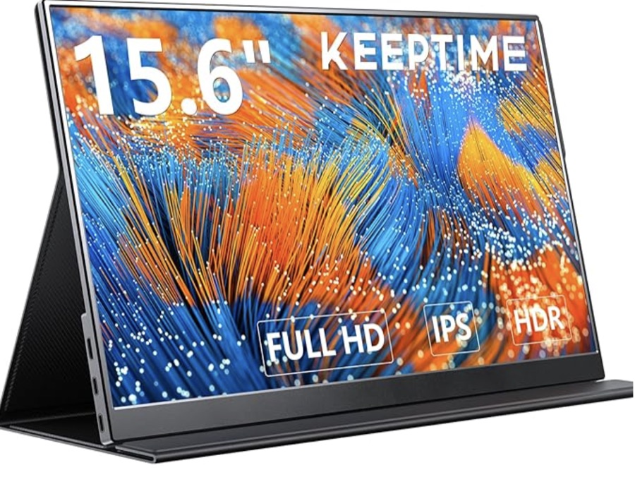
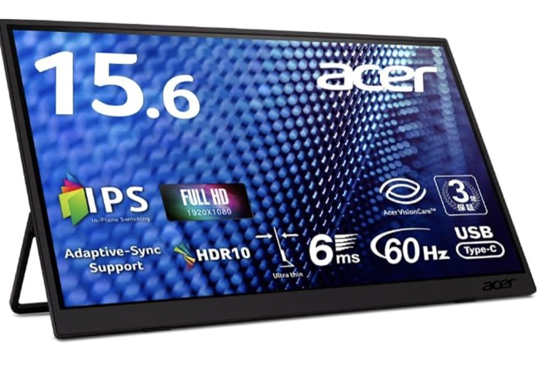
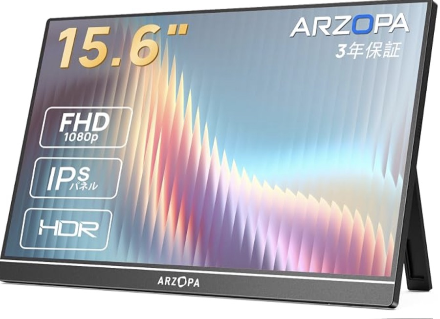
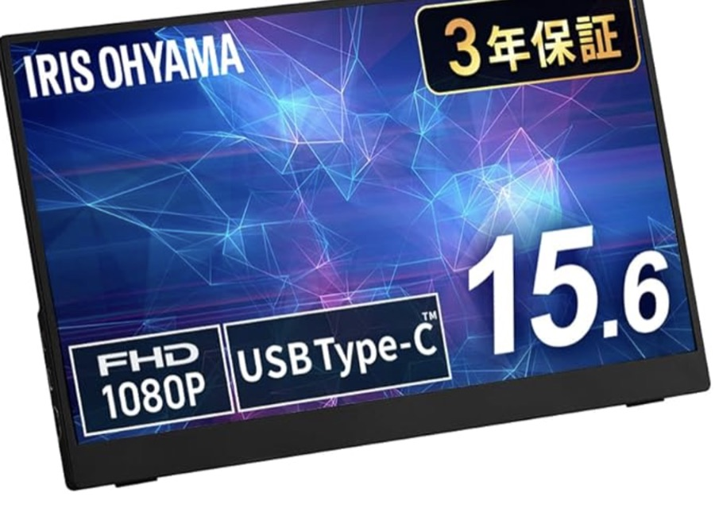
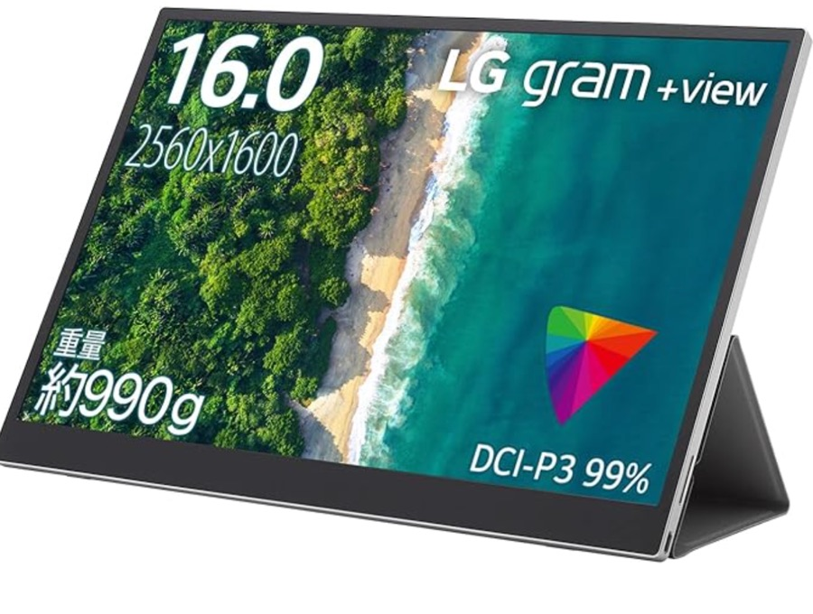

持ち運べるサブモニター、7千円台から5万円まで
——6点を比較

ノートパソコンの横に、もう一枚。画面が2つあるだけで、資料を見ながら書く、調べながらまとめる、といった作業がずいぶん楽になります。据え置きの液晶と違って持ち運べるモバイルモニターは、以前は2万円3万円が当たり前でしたが、ここ数年で7千円台のものまで出てきて、選択肢が一気に広がりました。
今回は15.6インチを中心に、7,552円から49,800円までの6点を並べました。値段の幅が6倍以上あるので、「安いものは何を諦めているのか」「高いものは何にお金を払っているのか」が見えやすいはずです。1点は実際に自分で使っているものです。
選び方の整理
見るところは4つあります。
- 重さ — 570gから740gくらいに収まっているものが多い。数字だけ見ると小さな差ですが、ノートパソコンと一緒に毎日運ぶなら、100gの差は鞄を持ったときに分かります
- 解像度 — 大半はフルHD（1920×1080）。文字をきれいに出したい人向けに2560×1600といった高精細なものもあり、そこが価格の分かれ目になります
- 電源の取り方 — USB Type-Cケーブル1本で映像も電力もまかなえるのが理想ですが、つなぐ側の端子が映像出力に対応していないと映りません。パソコンから電力を吸うぶん、明るさや音量が控えめになる機種もあります
- 保証とサポート — 3年保証をうたうものが複数あり、国内の窓口が用意されているかどうかも差になります
※本文中の商品リンクはアフィリエイトリンクです（PR）。6点のうち1点は実際に使っているもので、残りは商品ページの仕様表と、実際に使っている方々のレビューをもとにまとめています。
一覧
- KEY TO COMBAT 15.6インチ（600g・私も使用中）¥7,552
- KEEPTIME 15.6インチ（570g・厚さ5mm）¥8,404
- Acer PM161QJ（700g・応答6ms）¥12,656
- ARZOPA A1 15.6インチ（740g・3年保証）¥14,880
- アイリスオーヤマ DP-FF164S-B（国内サポート）¥18,980
- LG gram +view 16MQ70（16インチ・2560×1600）¥49,800
※価格・評価・レビュー件数は2026年8月17日時点のAmazonの情報です。重さ・解像度・端子は各商品ページの仕様表および商品説明に基づきます。KEY TO COMBATはこの時点でタイムセール中で、参考価格は¥9,980、KEEPTIMEの参考価格は¥12,950です。
つないだだけで映らないことがある——電源まわりの話
モバイルモニターでいちばんつまずきやすいのが、ここです。USB Type-Cケーブル1本で映像と電力をまとめて送れるのが今の主流ですが、これはパソコンやスマートフォン側の端子が「映像も出せるType-C」である場合に限られます。見た目は同じ形なので、買ってからつないで初めて気づく、ということが起こります。対応していない場合はHDMI（多くの機種ではmini HDMI）で映像を送り、電力は別途USBから取る、という二本立てになります。
もうひとつ、パソコンから電力を分けてもらう関係で、明るさや音量が控えめになる機種があります。ARZOPAは商品ページで「PCとType-C接続時は自動で省電力モードになる。安定した高輝度・高音量を希望の場合は別途電源アダプターを」と明記しています。LG gram +viewにいたっては、そもそもバッテリーを積んでおらず、電力はつないだ機器から供給される仕様です。手持ちの環境で使えるかどうかは、値段より先に確認しておきたいところです。
それぞれの性格
KEY TO COMBAT 15.6インチ FHD（600g・¥7,552）
実はこれ、私が今年の7月に買って使っているものです。決め手は正直なところ値段でしたが、使ってみて満足しています。軽くて、画質も十分。何万円もするものと比べれば上はあるのでしょうが、資料を開いておく、動画を流しておく、といった日常の用途で不満を感じる場面がありません。
仕様のうえでは15.6インチのフルHD、応答の速いFast IPSパネルで、映り込みの少ない非光沢。本体600gでスピーカーも内蔵しています。背面にスタンドが一体化した自立型で、別途スタンドを買い足す必要がないのも助かります。同じシリーズに4Kや、動きの滑らかなWQHD/100Hzの選択肢もあります。
KEEPTIME 15.6インチ 1080P（570g・¥8,404）

6点のなかでいちばん軽い570g、そして厚さ5mm。マグネットで留める保護カバーが付き、そのカバーがスタンドを兼ねる形です。ディスプレイ部門のベストセラーに入っており、レビューは3,500件を超えています。とにかく薄く軽く持ち歩きたい人向けの一枚です。
同じ商品ページの中に4Kや大画面など複数の仕様が並んでいるので、選ぶときは価格だけでなく、どの仕様を選んでいるのかを確認してから進めるのが安全です。
Acer PM161QJbmiuux（700g・¥12,656）

パソコンメーカーが作っているモバイルモニターです。フルHDのIPS・非光沢という基本は同じですが、応答速度6ms、映像のカクつきや画面の裂けを抑えるAdaptive-Sync対応、HDR10対応と、動きのある映像を意識した作りになっています。角度を自由に決められるチルトスタンドとVESAマウント対応も、机に据えて使う時間が長い人には効いてきます。
保証は3年（パネルは1年）。指で操作できるタッチ対応モデルも同じページから選べます。
ARZOPA A1 15.6インチ（740g・¥14,880）

この価格帯では定番といっていい一枚で、レビューは4,300件を超えています。フルHDのIPS非光沢にHDRモードを備え、Type-C端子を2つ搭載。最薄部5mmで740g、0〜80度の一体型スタンドで角度を細かく決められます。縦置きにも対応しているので、長い文章やコードを表示する用途にも向きます。
保証は3年。数の多いレビューを読めるのは、買う前の判断材料としてそれ自体が価値になります。
アイリスオーヤマ DP-FF164S-B（¥18,980）

15.6インチのフルHD・非光沢、スピーカー内蔵という中身は他と大きく変わりませんが、この一枚の価値は3年保証と、365日24時間の国内サポート窓口にあります。Amazon限定モデルです。
安い機種の多くは海外のブランドで、困ったときのやりとりが不安という声は少なくありません。値段の差をサポート代と考えられるなら、選ぶ理由になります。
LG gram +view 16MQ70（16インチ・¥49,800）

6点のなかで唯一、性格がはっきり違う一枚です。16インチで2560×1600の高精細、映画の色域規格であるDCI-P3を99%カバー。画面の縦が長い16:10なので、書類やウェブページを表示したときに一度に見える範囲が広くなります。商品説明では本体670gとされています。
写真や映像の色を見る人、文字の粗さが気になる人にとっては、フルHD機とは別の道具です。ただしバッテリーは搭載しておらず、電力はつないだ機器から供給される仕様なので、持ち出して使う場面では給電をどうするかを決めておく必要があります。
選ぶなら
- まず一枚試してみたいなら、KEY TO COMBAT（実際に使っていますが、この値段でこの写りなら十分だと思っています）
- とにかく薄く軽く持ち歩きたいなら、570g・厚さ5mmのKEEPTIME
- ゲーム機をつなぐ、動きのある映像を見るなら、応答6msでAdaptive-Sync対応のAcer
- 縦置きや角度調整をよく使い、レビューの多さで安心したいなら、ARZOPA A1
- 困ったときの窓口を重視するなら、国内サポート付きのアイリスオーヤマ
- 文字の精細さや色にこだわるなら、2560×1600のLG gram +view
画面をもう一枚増やすというのは、道具が増えるというより、机が広くなる感覚に近いと思います。一万円を切るものでも役目は果たしてくれるので、まず安いところから始めて、物足りなくなったら上を見る、という順番でいいのではないでしょうか。